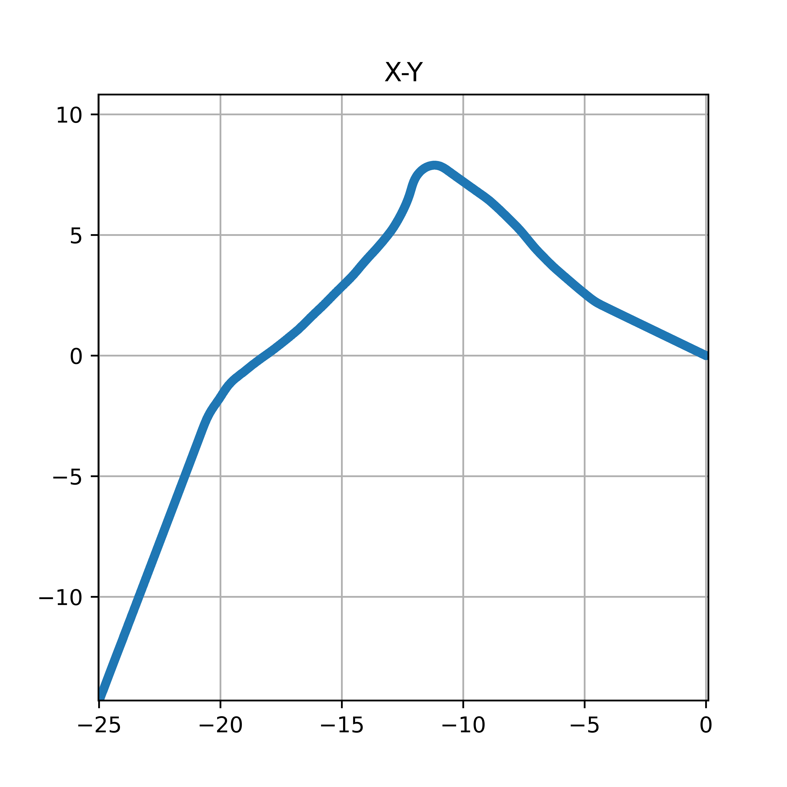

高一上的研究性学习报告
本人承担任务
通过手机传感器测量相关数据，编写计算机程序对数据处理，绘制结果图像。
选题背景
这学期物理必修一里我们学习了匀加速运动，并用实验探究了位移和时间的关系。另外，在必修二里学习了关于圆周运动的一些知识，介绍了运用信息技术完成实验的样例。考虑到一些手机配有线速度传感器可以用来测量瞬时加速度，配有陀螺仪传感器可以用来测量瞬时角速度，根据已学物理知识，我觉得可以利用这些数据进行处理获得从静止出发的物体在同一水平面内不规则运动的运动轨迹。
研究过程
获取数据
将手机平行于水平地面放置在平整的长方体箱子上，开始记录数据，推动箱子向前运动，没有必要保持直线。一段时间后，转向，再次推动一定距离，停止记录。在电脑上利用软件获取手机上的线速度传感器和陀螺仪传感器数据。
处理数据
编写计算机程序对获取的瞬时加速度和瞬时角速度数据进行处理以获得手机的运动轨迹。具体过程为通过瞬时加速度关于时间的数值积分得到瞬时速度、瞬时角速度关于时间的数值积分得到瞬时角度（在每一时刻手机相对开始时朝向所旋转的角度），将两者汇总再次关于时间数值积分求得瞬时位移。记录每一时刻的位移，并将其通过散点图（仅在坐标系中将提供的一系列 x-y坐标以点的形式绘制出来）绘制出来，因相邻测量点时间间隔极小，故图像中形成一条连续的运动轨迹。
其中涉及相关公式：
$$
数值积分求加速度(y方向、旋转忽略):\
设第ts的加速度为a_t,速度为v_t,x方向位置为x_t,相邻测量点的时间间隔为T\
v_t=v_{t-1}+a_tT\
x_t=x_{t-1}+v_{t-1}t+\frac12a_tt^2
$$
其中实现的主要代码
1 |
|
研究内容摘要
轨迹：
自原点出发向x轴负半轴、y轴正半轴方向，与x轴夹角约37°做近似直线运动到约(-11,7)处，逆时针旋转 约90°，向前沿近似直线运动到约(-25,-15)处结束。总共耗时24.3秒。经检验与实际运动轨迹相近。
经过实际测量数据表明，轨迹图像形状与实际相符，但是具体数据有一定误差。
误差分析：
猜测与传感器误差、数值积分（计算的程序）误差有关。
图片：

成果呈现形式
轨迹图片、轨迹点坐标、计算机程序。